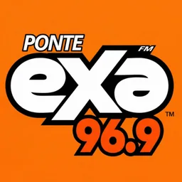
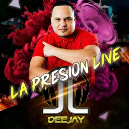
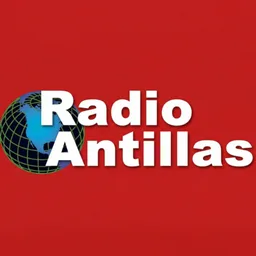
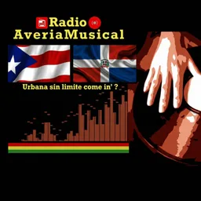

Hub · Ciudad
Radios en Santo Domingo
124 emisoras en vivo en VivoRD
El dial de Santo Domingo concentra la mayor parte de la radio comercial dominicana. Desde Gazcue y el Ensanche hasta los polígonos industriales del Gran Santo Domingo, la capital reúne emisoras nacionales con alcance país, cadenas regionales y señales especializadas en noticias, deportes, música tropical y formatos urbanos. Para quien escucha desde el extranjero, entender este mapa ayuda a elegir entre la parrilla generalista de la mañana y las voces nocturnas de conversación.
En la calle, la radio capitalina sigue siendo compañía en guaguas, colmados y talleres. Muchas frecuencias FM que nacieron aquí marcan la agenda informativa de todo el país: boletines al amanecer, mesas de opinión al mediodía y bloques deportivos en la tarde. Otras apuestan por un público joven con reggaetón, dembow y estrenos digitales, mientras las clásicas del merengue y la bachata mantienen espacios fijos en la tarde-noche.
VivoRD lista en esta página las emisoras saludables asociadas a Santo Domingo según el campo de ciudad en nuestro catálogo. No inventamos ubicaciones: si una emisora declara otra sede, aparece en su hub correspondiente. Cada ficha incluye reproductor web, frecuencia cuando consta en el nombre o la descripción, y texto editorial propio.
Explora el listado, abre las fichas que te interesen y guarda tus favoritas. Si buscas contexto sobre cómo escuchar radio dominicana online o guías por género, revisa los enlaces al final de esta página. El dial capitalino cambia con el tiempo, pero sigue siendo la puerta de entrada al sonido cotidiano de República Dominicana.
Emisoras









